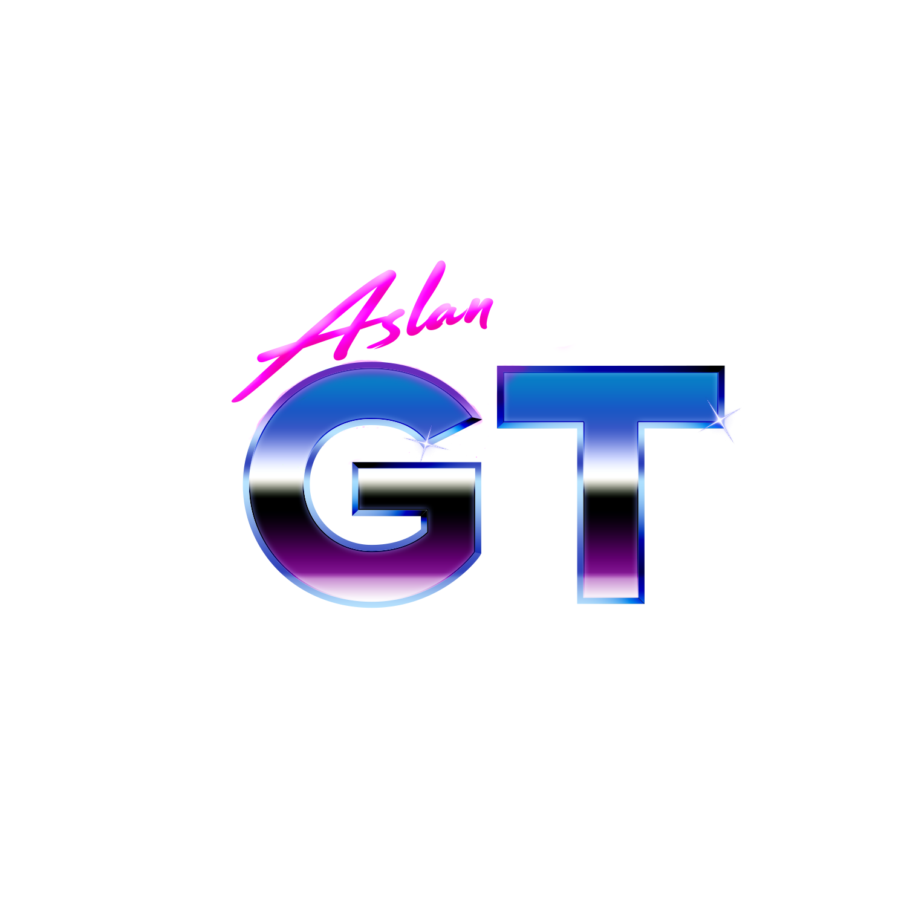
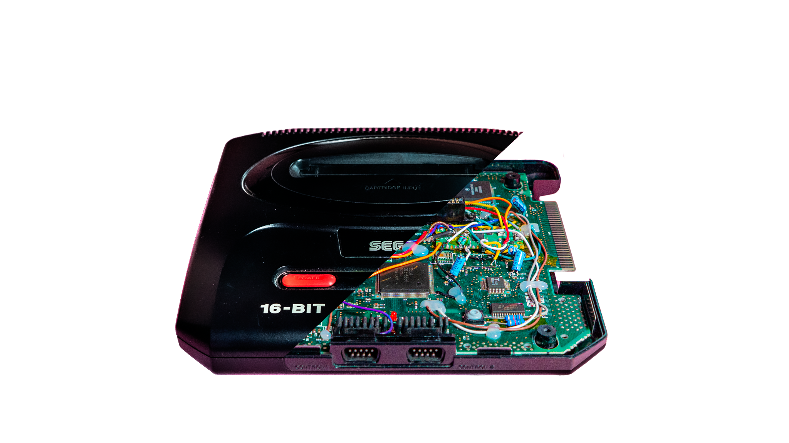

SUOMALAINEN RETROPELISIVUSTO
Vanha rauta.
Vanha rauta.
Uudet ideat.
Retropelit, klassikkokonsolit ja niiden modaus. Tervetuloa AslanGT:n maailmaan.

01 / KANAVASTA
Mikä ihme on AslanGT?
AslanGT on suomalainen YouTube-kanava, jossa sukelletaan retropelien ja vanhojen pelikonsoleiden maailmaan.
Kanavan aiheisiin kuuluvat muun muassa retrospektiivit vanhoista klassikoista, videopeliaiheiset dokumentit sekä raudan korjailu ja modaus.
Sukella rohkeasti retroon!
RETROPELITVANHAT KONSOLITMODAAMINEN
02 / YHTEISÖ PÄIVITTYY TUNNEITTAIN
YOUTUBE-TILAAJAT
–
Odotetaan ensimmäistä päivitystä
Matkalla kohti 500 tilaajaa–
0500 tilaajaa
Liity mukaan YouTubessa
KONSOLIT & MODAAMINEN
Klassikko myös pinnan alta.
Modattu Mega Drive näyttää, että vanhassa pelikonsolissa riittää edelleen tutkittavaa. Samalla se toimii esimerkkinä projekteista, joita kanavalla toteutetaan.

03 / KATSELUUN
Kaikki videot Uusimmat videot.
Videot ilmestyvät tähän ensimmäisen automaattisen päivityksen jälkeen. Katso sillä välin YouTubesta ↗
04 / OTA YHTEYTTÄ
contact@aslangt.fi
Onko sinulla idea?
Kysymykset, vinkit ja yhteistyöehdotukset ovat tervetulleita. Laita viestiä!